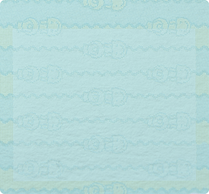

Update Notes
Ver.4.0.0
Version 4.0 is Here!
PWA Web adapted, Now you can download the web application to your phone!
Pedometer in testing:
After activate the button below, you will be able to register real steps!!
Is currently under development, it may fall, specially in IOS. It also works in some browsers
Due to PWA limitations, it is not possible to track steps while the app is running in the background
or the phone is locked. I am working on a power-saving mode to prevent the screen
from locking and to lower the brightness.
OK
SAVE ANIMATION
PRINT SELECTED
EDIT KKK ANIM
ERASER
START ANIM
SHOW HOR GRID
SHOW VER GRID

88888
shake
right
left
top
bottom